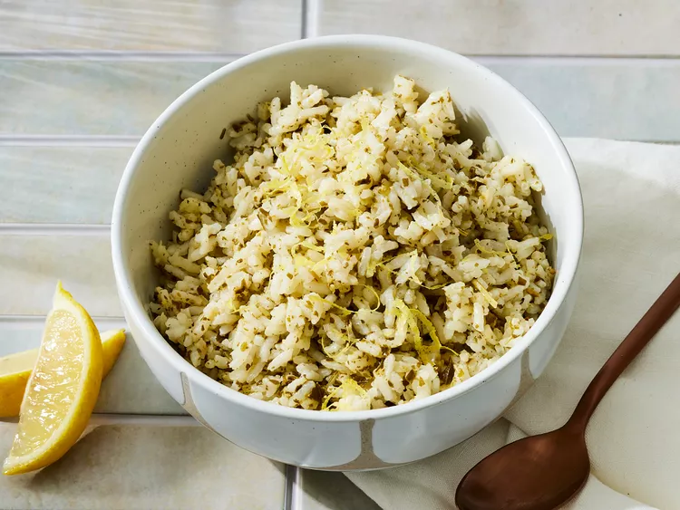

Experience the vibrant flavors of homemade Pesto Rice. This dish combines
fragrant basil pesto with fluffy, perfectly cooked rice, creating a
symphony of taste and aroma. It's a quick and delicious recipe that's both
satisfying and versatile. Whether served as a side dish or a main course,
Pesto Rice is a delightful addition to any meal.
- 2 cups of cooked white rice
- 1/2 cup of fresh basil leaves
- 1/4 cup of grated Parmesan cheese
- 1/4 cup of pine nuts
- 2 cloves of garlic
- 1/4 cup of extra-virgin olive oil
- 1/2 teaspoon of salt, or to taste
- 1/4 teaspoon of black pepper, or to taste
-
In a food processor, combine the fresh basil leaves, grated Parmesan
cheese, pine nuts, and garlic. Pulse until the ingredients are finely
chopped.
-
With the food processor running, slowly drizzle in the extra-virgin
olive oil until a smooth pesto sauce forms.
-
Season the pesto sauce with salt and black pepper to taste. Adjust the
seasoning as needed.
-
In a large bowl, combine the cooked white rice and the freshly prepared
pesto sauce. Mix well until the rice is evenly coated with the pesto.
-
Let the Pesto Rice sit for a few minutes to allow the flavors to meld
together.
-
Serve the Pesto Rice as a delicious side dish or add your favorite
protein for a complete meal. Enjoy!